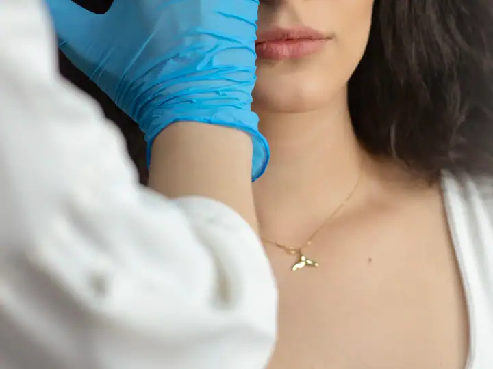
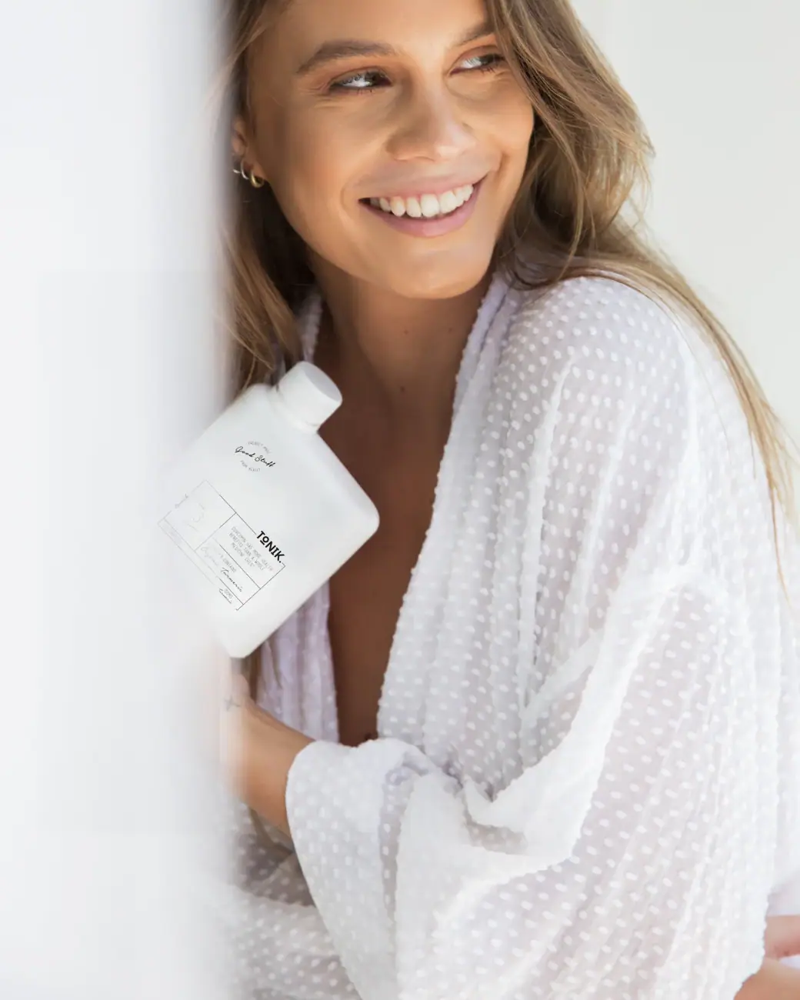
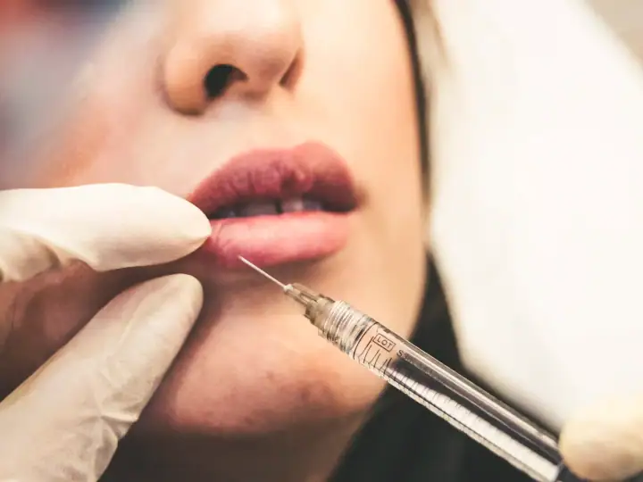
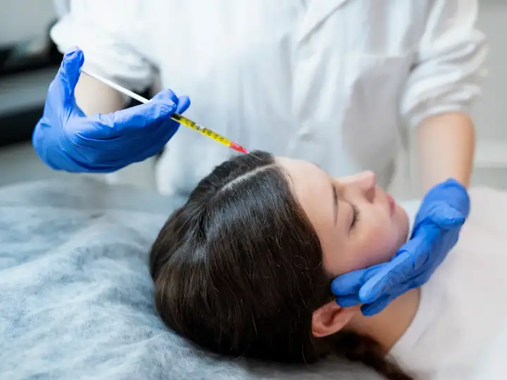
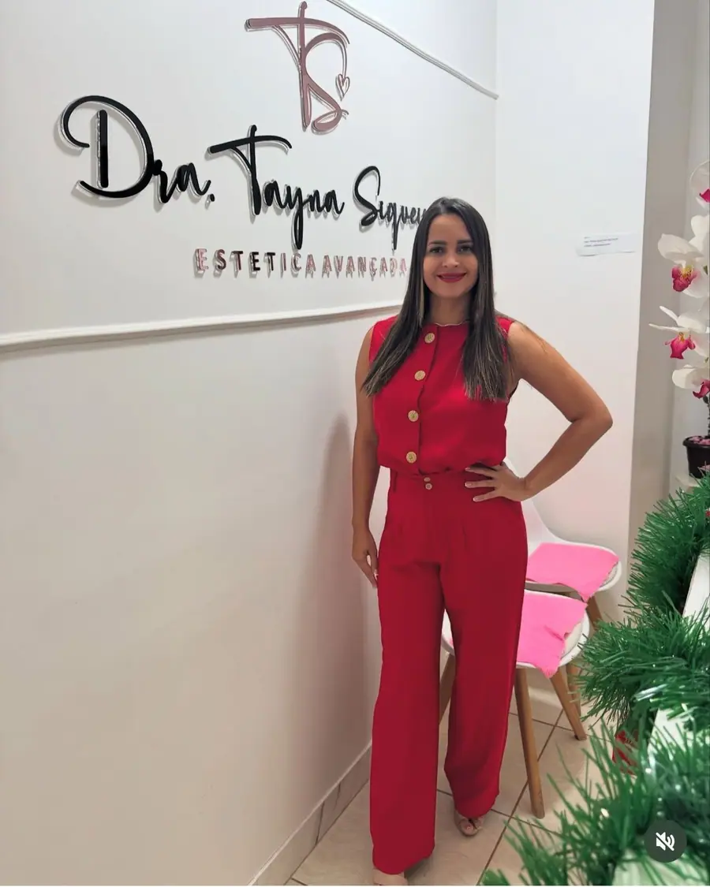

01
Toxina botulínica
Suaviza rugas de expressão da testa e dos olhos com aplicação planejada para manter a naturalidade.
Agendar avaliaçãoEstética avançada no Jardim Curitiba · Goiânia
Toxina, preenchimento de lábios, bioestimuladores, correção de lóbulo, queda capilar e massagens com a Dra. Tayna Siqueira, especialista em botox e preenchimento. Nota 5,0 com 41 avaliações no Google.

Especialista em botox
Escolha o procedimento e fale direto com a clínica da Dra. Tayna Siqueira. A mensagem já vai pronta no WhatsApp.

Suaviza rugas de expressão da testa e dos olhos com aplicação planejada para manter a naturalidade.
Agendar avaliação
Contorno e hidratação dos lábios com ácido hialurônico, respeitando o formato do seu rosto.
Agendar avaliação
Estimula o colágeno da própria pele para melhorar firmeza e flacidez de forma gradual.
Agendar avaliação
Avaliação do couro cabeludo e protocolos para queda e enfraquecimento dos fios.
Agendar avaliaçãoUma pausa de verdade para aliviar tensões e cansaço, em ambiente tranquilo.
Agendar avaliação
Hidratação, massagem e ativos para devolver o viço e o brilho natural da pele.
Agendar avaliação
Na clínica da Dra. Tayna, quem atende você é ela: explica cada etapa, mostra o que dá para fazer e acompanha o pós, para o resultado ficar do jeito que você sonhou.
Primeiro a avaliação, depois o plano. Você entende cada etapa antes de começar.
Conte o que você quer melhorar. A equipe responde, tira as primeiras dúvidas e marca o melhor horário.
A profissional avalia sua pele ou seu corpo, explica as opções e monta um plano com as sessões indicadas.
Você decide com calma e é acompanhada em cada sessão, com orientações para cuidar em casa.
Segunda a sexta: 08h–18h
Avaliações reais de clientes publicadas no Google Maps.
“Fiz tratamento capilar, botox e colocação de fios para tratamento de rugas, com excelentes resultados!. Super recomendo!”
“Ótima,amei ☺️ ela e bem atenciosa prestativa,e faz um trabalho maravilhoso eu super indico, vocês não vão arrepender 😍”
“Dra. Tayna Siqueira uma ótima profissional super indico, marca sua consulta p uma avaliação vc não vai se arrepender.”
“Profissional excelente ! Atendimento personalizado e humanizado, sem contar o carisma que ela tem. Super indico !”
“Excelente profissional, amei meus resultados estéticos . Consultorio bem equipado. Melhores marcas ,super indico .”
Não achou sua dúvida? Pergunte direto para a equipe no WhatsApp.
A clínica da Dra. Tayna Siqueira fica na R. JC 20-C, Quadra 20, Jardim Curitiba, em Goiânia (GO), CEP 74480-600. Pelo botão "Traçar rota" nesta página você abre o caminho direto no Google Maps.
A clínica da Dra. Tayna Siqueira atende segunda a sexta, das 08h às 18h. Não abre aos sábados e aos domingos. O agendamento é feito pelo WhatsApp.
É só chamar no WhatsApp (62) 99182-5268 pelo botão "Agendar avaliação". A equipe responde, tira suas dúvidas e marca o melhor horário para a sua avaliação.
Toxina botulínica, Preenchimento labial, Bioestimulador de colágeno, Terapia capilar, Massagem relaxante e revitalização facial. O procedimento indicado para você é definido na avaliação.
Em geral de 4 a 6 meses, variando de pessoa para pessoa. O resultado começa a aparecer alguns dias após a aplicação.
Fica, quando é planejado para o seu rosto e feito na quantidade certa. Na avaliação você conversa sobre o resultado que deseja antes de qualquer aplicação.
O resultado é gradual: a pele vai ficando mais firme ao longo de semanas, conforme o colágeno é produzido. O número de sessões é definido na avaliação.
Ajuda em muitos casos, depois de uma avaliação do couro cabeludo para entender a causa da queda. Em alguns casos, é indicado também o acompanhamento médico.
Agende sua avaliação na clínica da Dra. Tayna Siqueira em poucos minutos pelo WhatsApp.